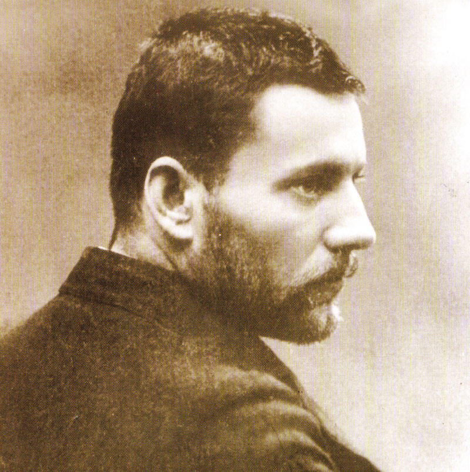
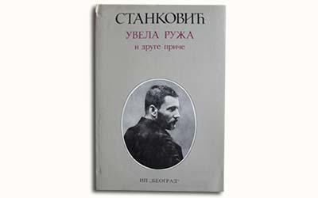

„Uvela ruža (iz dnevnika)“ je pripovetka Borisava Stankovića, objavljena je prvi put u njegovoj debitantskoj knjizi, zbirci pripovedaka, „Iz starog jevanđelja“ (1899). Kao i mnoga druga Stankovićeva dela, i ona sadrži autobiografske elemente. Zaplet u njoj je uslovljen socijalnim razlikama zaljubljenih ljudi. U ovakvim pripovetkama posebno se vidi Stankovićeva umešnost da dramu ličnosti prenese unutra, da je postavi u žarište duše.
Borisav Stanković (Vranje, 31. mart 1876 — Beograd, 22. oktobar 1927) bio je srpski književnik. Najviše se istakao kao pripovedač, romansijer i dramatičar. Njegovo stvaralaštvo uglavnom se svrstava u realizam, ali ima osobine koje naginju ka naturalizmu. Novija kritika svrstava ga u začetnike moderne srpske književnosti. Njegovi romani i pripovetke oslikavaju život ljudi sa juga Srbije. Pripada grupi pripovedača koji su se pojavili na prelazu u 20. vek, Ivi Ćipiku, Petru Kočiću, Milutinu Uskokoviću i drugima. Smatra se jednim od najznačajnijih srpskih književnika.
Stanković svoje zaljubljene postavlja u tipičnu poziciju ljubavnika koji se svesno odbijaju, a podsvesno im duše lete jedna drugoj. U ovoj pripoveci pronalazimo prepoznatljive elemente koji je povezuju sa prozom neoromantizma. To su ljubav za prošlim danima, pojava snova kao uzroka budne duše, idealizacija prirode i mladosti, ubacivanje folklora u priču kao i pripovedanje u prvom licu. Ipak pripovetka “Uvela ruža” je impresionističko delo i pisana je u obliku dnevnika, dakle u formi lične ispovesti.
Dramatika Stankovićevog stvaralaštva jeste bolna nostalgija ljubavi. Reči Vranjanaca u njegovim delima zvone i nalaze dubok odjek u našim složenim i uznemirenim dušama. Sve ljude spaja jedna bolna solidarnost, jedna tragedija zajednička svima. Svaki čovek želeo bi živeti srećno, slobodno. Želeo bi živeti intenzivan, potpun život, život pun ljubavi. Patrijahalna, teška sredina, kakvu nam Stanković opisuje, neprobojna je i traži od čoveka da joj podredi sve što mu je najdraže.
Hajde da snevamo: Bili smo komšije. Tvoja majka samo tebe, moja majka samo mene imađahu. Majka je moja želela da ja postanem ono što moj otac ne beše: da povratim izgubljeno imanje, uzdignem i još lepšim sjajem obasjam već pomračeno ime naše. Ja sam samo to znao da ti nisi za mene, da si mnogo dole, nisko, nisko! I da je čak to dosta od nas što ti dopuštamo da si kod nas, te da nas služiš, da mi kao rođenu bratu ugađaš i da, gledajući me, smešiš se blago i trudiš da pogodiš svaku moju želju, smatrajući se srećnom ako mi je ispuniš. Za tebe bejah Bog, idol i najsvetije biće.